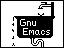
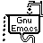
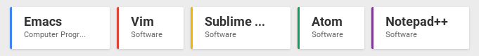
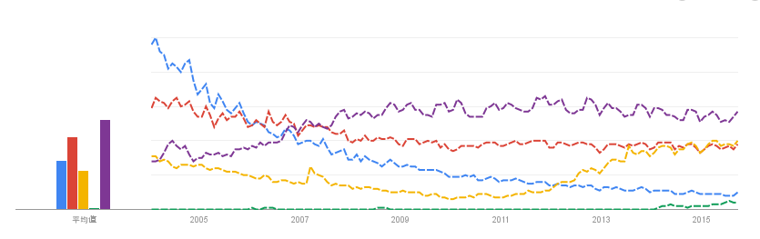
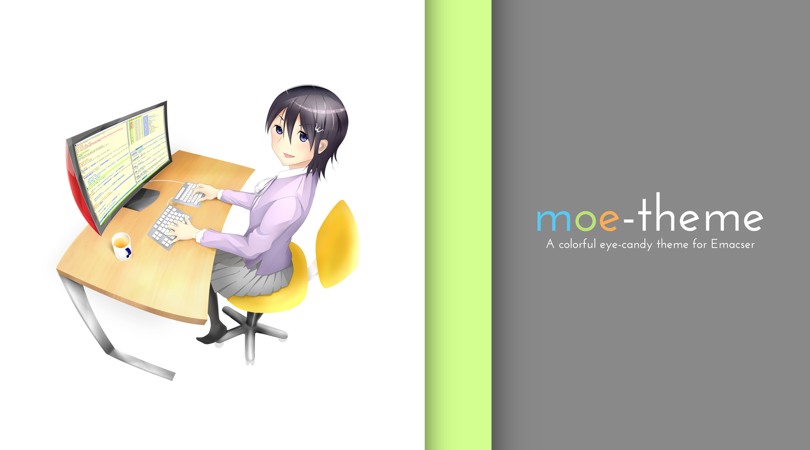
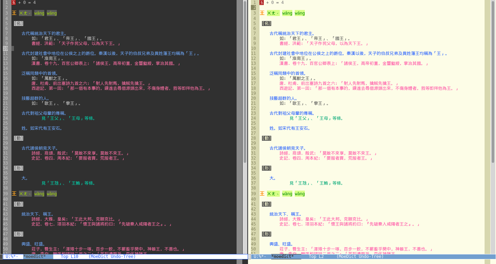
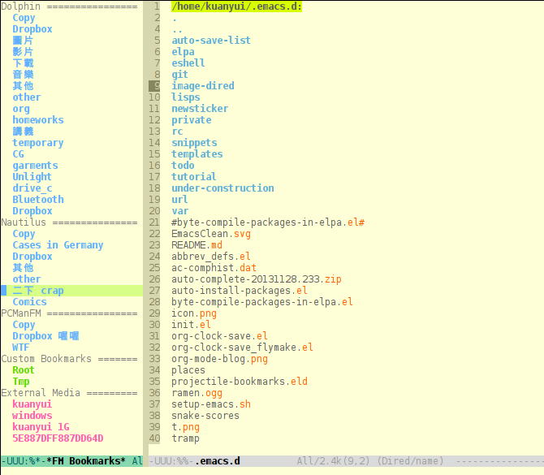
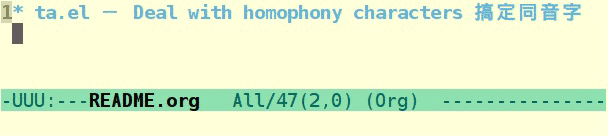

- 網路代號:
kuanyui - Use Emacs since 2012 (3.5 years)
- 大學唸園藝
- 鋼琴與古典音樂狂熱愛好者（特喜歡 Alkan，最近喜歡 Schubert）
「哇你手指怎么这么长！和女生一样好秀气喔！你弹钢琴吧？」
「不，我用 Emacs 的」 - 自由軟體與 RMS 教徒
- 目前主要是在寫 Python/Django
kuanyui
「哇你手指怎么这么长！和女生一样好秀气喔！你弹钢琴吧？」
「不，我用 Emacs 的」
從完全不會寫程式到
每天用 Emacs 過生活
| Emacs | Vim | Sublime | Atom | Notepad++ | |
|---|---|---|---|---|---|
| 跨平台 | O | O | O | O | X |
| OpenSource™ | O | O | X | O | O |
| 有 CLI 界面 | O | O | X | X | X |
| 台灣使用者數量 | 稀有動物 | 多 | 多 | 少 | 超多 |
 
Emacs 做了太多的事情,与采用搭积木哲学的 UNIX 格格不入。但事实上，「违背了 UNIX 的哲学」恰好是 Emacs 的价值所在，因为它的血统本身就在 UNIX 之外，它传承自 MIT 实验室的 Lisp Machine。
「用过 LISP 机器的人自然不习惯 UNIX 这种看上去『低级』的操作系统。」
结果是，用过 LISP Machine 的用户除了抱怨 UNIX 外，只能寻求在 UNIX 上构建一个新的层，来弥补 UNIX 的不足。这事情的一个结果就是造就了 Emacs 这个怪兽，到最后几乎所有能在 UNIX 里做的事情，都能在 Emacs 里完成。
bash, zsh, less, info
 
M-x emacs-uptime ≈ $ uptime
#emacs.tw 上的 letoh 和 Ethan- 大大教我寫 Lisp <(_ _)>
Gnuplot 的 code，在 export 時自動插入 gnuplot 指令的輸出結果。
Org-mode XeLaTeX
1 2 3 4 5 ... 14 15 檔名換成 01 02 03 04 05 ... 14 15
$ cd ~/Video/ACG/Hourou_Musuko $ for i in *.rmvb; do mplayer $i;done
eww ）
moe-theme.elJust another Emacs' color theme.

moedict.el萌典的 Emacs 版客戶端。

writing-utils.elhexo, flickr…etc)。
writing-utils.el ：一些有的沒的編輯小工具集合
flickr.el ：抓 Flickr 照片的 raw link
hexo.el ：讓 Hexo 使用更方便的一些小工具
fm-bookmarks.el快速用 Dired 開啟檔案管理員(Nautilus, Dolphin, PCManFM)中的書籤。

ta.el搞定「他她它牠祂」這種煩死人的同音字

fsc.elFuck the Speeching Censorship!

、 ｅ 國 以 倒 句 直 可 台 ｘ 情 隨 轉 話 書 以 獨 ： 的 機 等 順 ， 把 ︶ 敏 插 等 序 或 字 。 法 感 入 ， 打 者 串 輪 詞 符 也 亂 把 轉 功 ︵ 合 可 、 一 成
ox-ioslide.el就是你現在看到的這個投影片的 generator。
如果你想要一個編輯器，用 Vim；
想要一個自己的編輯器，用 Emacs。
Thank You slide